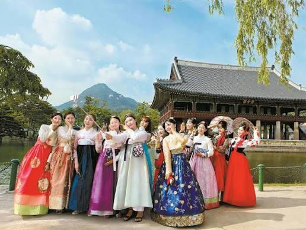

Không Gian Truyền Thống Việt Nam
Khu vực triển lãm trung tâm giới thiệu trọn vẹn tinh hoa Ẩm thực (Phở, Bánh Chưng, Bánh mì), Du lịch (Vịnh Hạ Long, Phố cổ Hội An, Hang Sơn Đoòng) và Lịch sử - Văn hóa (Lịch sử giữ nước, Nhạc Dân ca, Thơ ca Cách Mạng).
3 Khu Vực Quốc Gia Chính Tại Lễ Hội
Ấn vào từng quốc gia bên dưới để mở trang riêng và khám phá 3 mục: Ẩm thực, Du lịch và Lịch sử & Văn hóa.

1. Trung Quốc
Thưởng thức Dimsum, Vịt quay Bắc Kinh, Đậu phụ Tứ Xuyên; tham quan Vạn Lý Trường Thành, Tử Cấm Thành, Bến Thượng Hải và tìm hiểu Tứ Linh, Thư pháp.
Khám phá 3 mục của Trung Quốc →
2. Hàn Quốc
Thưởng thức Kimchi, Kimbap, Bibimbap; dạo bước tại Gyeongbokgung, Gangwon-do, làng cổ Bukchon Hanok và tìm hiểu Võ Taekwondo, nền phim ảnh Hàn Quốc.
Khám phá 3 mục của Hàn Quốc →3. Nhật Bản
Thưởng thức Sushi, Ramen, Bánh Mochi; chiêm ngưỡng Núi Phú Sĩ, làng cổ Shirakawago, chùa vàng Kinkaku-ji và tìm hiểu thời Heian, Samurai, Trà Đạo.
Khám phá 3 mục của Nhật Bản →Giới Thiệu Nhóm & Quy Trình Tham Gia
Thành viên Ban Tổ Chức
- Phú Lộc, Hoàng Long: Phụ trách nội dung Việt Nam & Trang chủ
- Khánh Duy, Minh Khoa: Phụ trách chuyên mục Trung Quốc
- Tiến Lộc, Đức Nguyên: Phụ trách chuyên mục Hàn Quốc
- Anh Huy, Bảo Nghi: Phụ trách chuyên mục Nhật Bản & Form đăng ký
Các bước tham gia lễ hội
- Xem thông tin văn hóa của các quốc gia tại lễ hội.
- Ấn vào từng món ăn, điểm du lịch hoặc văn hóa để đọc bài viết chi tiết.
- Truy cập vào trang Biểu mẫu đăng ký trực tuyến.
- Điền thông tin cá nhân, chọn khung giờ và nhận thẻ tham dự tại cổng chào.
Bảng Thời Gian Hoạt Động Tại Ngày Hội
Chi tiết các khung giờ tổ chức giao lưu ẩm thực, du lịch và văn hóa tại sân khấu chính và khu vực gian hàng các nước:
| Khung giờ | Khu vực quốc gia | Hoạt động chính | Địa điểm | Trạng thái |
|---|---|---|---|---|
| 07:30 - 09:30 | Việt Nam | Khai mạc lễ hội, biểu diễn Dân ca & Thưởng thức Phở, Bánh Chưng, Bánh mì | Sân khấu trung tâm | Mở cửa tự do |
| 09:30 - 11:30 | Trung Quốc | Viết Thư pháp, triển lãm Tứ Linh & Thưởng thức Dimsum, Vịt quay Bắc Kinh | Khu gian hàng A | Đang nhận đăng ký |
| 13:30 - 16:30 | Hàn Quốc | Biểu diễn Võ Taekwondo, giao lưu Phim ảnh & Làm Kimchi, Kimbap, Bibimbap | Khu gian hàng B | Đang nhận đăng ký |
| 18:00 - 21:00 | Nhật Bản | Nghi thức Trà Đạo, trưng bày văn hóa Samurai & Ẩm thực Sushi, Ramen, Mochi | Khu gian hàng C | Đang nhận đăng ký |
Không Gian Âm Thanh, Video & Bản Đồ Lễ Hội
Video & Nhạc nền giới thiệu lễ hội
Âm thanh nhạc nền truyền thống lễ hội:
Bản đồ địa điểm tổ chức (Khung Iframe)
Địa điểm: Khuôn viên Nhà Văn Hóa Thanh Niên, Quận 1, TP. Hồ Chí Minh.